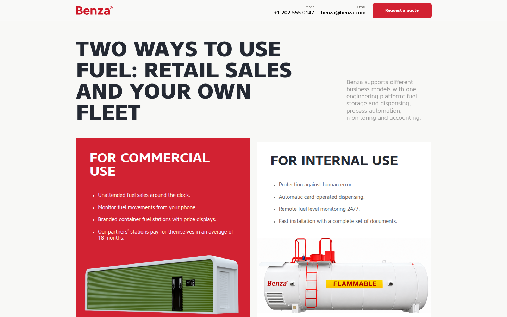
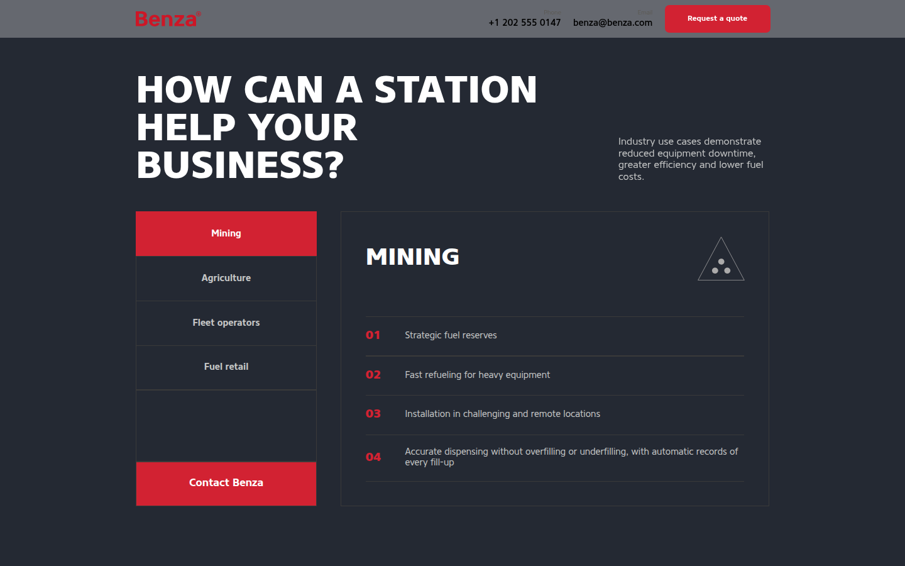
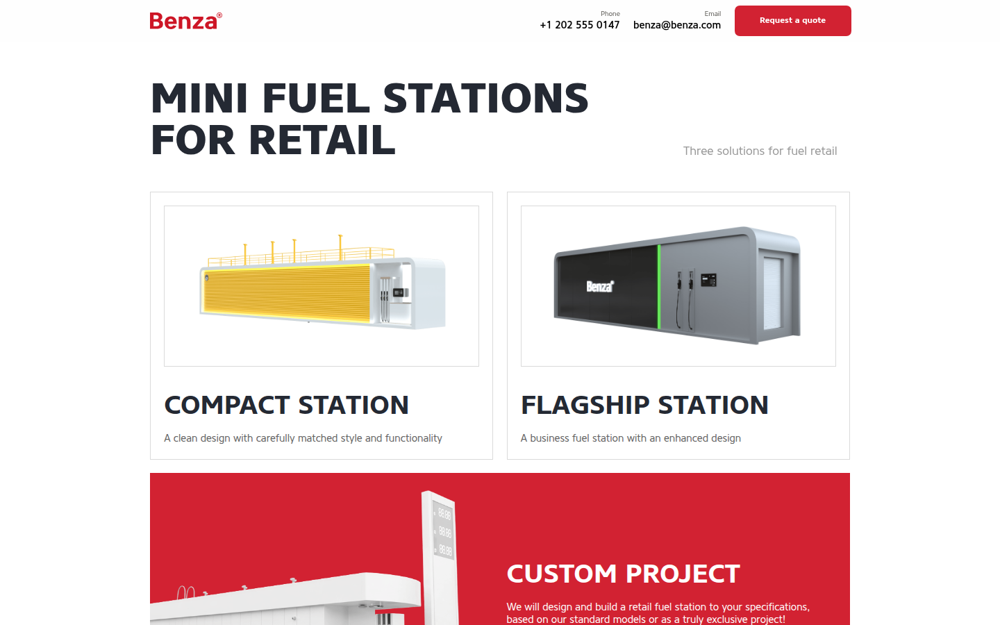
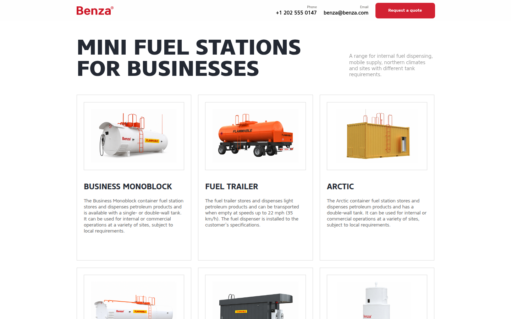
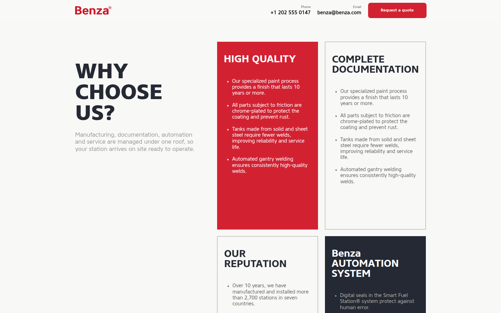
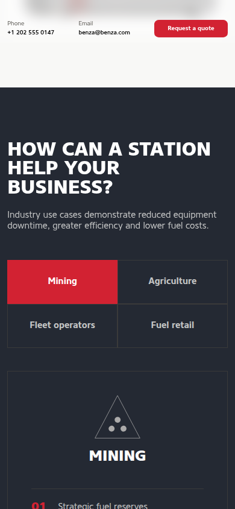

01
Разделить два сценария
Сайт сразу показывает решения для розничной продажи топлива и для собственного автопарка. Посетителю проще начать с того, что важно его бизнесу.
Как объяснить сложное оборудование так, чтобы бизнес быстро увидел пользу? Сайт проводит посетителя от задачи компании и выбора станции до запроса расчёта.
Открыть сайтМини-АЗС выбирают под конкретный бизнес, условия работы и объём задач. Сайт должен помочь разобраться в вариантах, показать пользу и привести к запросу коммерческого предложения.
Вместо длинного перечня характеристик — ответы на вопросы, которые возникают у клиента до обращения к производителю.
Для розничной продажи топлива и собственного автопарка нужны разные решения.
Стационарные станции, топливные модули и прицепы важно сравнить без погружения в каталог.
При выборе оборудования важны производство, документация и контроль топлива.
После знакомства с вариантами посетителю нужен понятный способ получить расчёт.
Страницу выстроил как последовательный разговор: зачем нужна станция, где она будет работать, какие есть варианты и как получить предложение.
Схемы восстановлены по готовой странице, чтобы показать логику расположения блоков.
Сложный продукт становится понятнее, когда клиент сначала узнаёт свою задачу и только потом сравнивает оборудование.
Каждый блок отвечает на свой вопрос и подготавливает посетителя к следующему шагу.
Сайт сразу показывает решения для розничной продажи топлива и для собственного автопарка. Посетителю проще начать с того, что важно его бизнесу.
Добыча, сельское хозяйство, автопарки и топливная розница вынесены в отдельные вкладки с конкретными задачами.
Карточки с изображениями и кратким описанием помогают сравнить форматы станций и понять, что обсудить со специалистом.
Производство, документация, опыт и автоматизация собраны вместе: посетитель видит не только продукт, но и то, что стоит за ним.
Форма объясняет следующий шаг — получить расчёт и консультацию. Пользователь может указать интересующий тип станции.
Блоки и вкладки адаптированы к узкому экрану, чтобы изучать предложение и связаться с компанией было удобно с любого устройства.
Контраст красного, графитового и белого, крупная типографика и изображения оборудования делают сложный продукт заметным и узнаваемым.

Крупное название бренда и короткое предложение сразу объясняют, кому принадлежит сайт и какое направление представляет компания.

Розничная продажа и заправка собственного транспорта показаны рядом. Контрастные карточки помогают посетителю узнать свою задачу и понять, с чего начать.

Вкладки переводят общие возможности станции на язык задач добывающих компаний, агробизнеса, автопарков и топливной розницы.

Изображения станций и краткие подписи помогают сравнить форматы для розницы. Для нестандартной задачи отдельно предложен индивидуальный проект.

Линейка для бизнеса собрана в карточки: клиент может увидеть оборудование и прочитать главное о назначении каждой модели.


Преимущества производства и автоматизации поддерживают решение, а форма показывает, что клиент получит после обращения.


На небольшом экране информация выстроена последовательно, а выбор отрасли и переход к заявке остаются доступными.
Получился сайт, который связывает бизнес-задачи клиента с конкретными вариантами оборудования и помогает перейти к запросу расчёта.
Помочь бизнесу разобраться в сложном оборудовании и выбрать направление.
Сценарии применения, отраслевые вкладки, наглядные карточки и понятная форма обращения.
Посетитель может заранее сформулировать запрос и обратиться к производителю с пониманием своих потребностей.
Демонстрационный сценарий: показатели вымышлены и приведены для примера оформления результатов.
Клиенту не обязательно разбираться во всех характеристиках с первого экрана. Важно быстро увидеть свою задачу и понять, куда двигаться дальше.
Когда отраслевые сценарии, варианты оборудования и следующий шаг связаны между собой, сайт становится понятным инструментом для первого обращения.

Я посмотрю ваш сайт и предложу три идеи, которые помогут клиенту быстрее разобраться в вашем предложении.
Максим КоцарьUI/UX-дизайнер